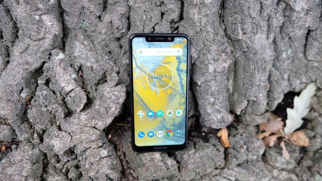
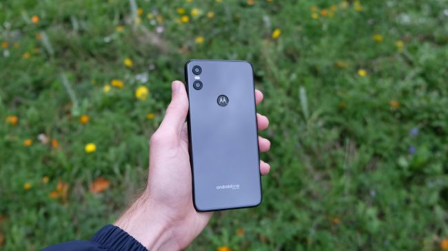

The Motorola One is the latest in an increasingly long line of mid-range Android phones to offer iPhone X looks at an affordable price point. It’s a smart, well-balanced phone with few glaring weaknesses.While its design largely holds its own with rivals from Huawei and co., however, there are a couple of shortfalls. The phone’s display isn’t sharp enough, while it also runs on a slightly outdated chipset.The presence of Android One is a plus point, but even then it’s not a massive departure from Motorola’s usual software efforts. All in all, a decent phone, but far from an essential pick.
|  |  |
| Front View | Back View |
|---|
Notch aside, the Motorola One is a pleasant phone to wield. At 7.97mm thin and 162g in weight, it fits that vague 'just right' feeling that means it won't jar your nerves every time you pick it up or slip it into your pocket. It's only a smidgen taller and wider than the iPhone XS.
While that 5.9-inch 19:9 display dominates the front of the Motorola One, it doesn’t particularly impress. It gets plenty bright enough, with a default auto-brightness setting that gets the job done in most situations - something that you don’t always find at this price point. The color balance is perfectly fine, too, with an eye-pleasingly natural tone. But there’s a lack of pop to the picture that it outputs, which seems to come largely from a sheer lack of pixel density. At 720 x 1520, you’re looking at a 720p resolution. Stretched out over almost 6 inches, this results in a far from ideal 287 pixels per inch.
As implied in the name, the Motorola One is an Android One phone. This means it uses Google’s standard Android interface, not a custom one. It’s not exactly the same as the interface used in Pixel phones. They use Pixel UI, which has a few distinct visuals elements of its own, but ultimately feels similar.
This phone has 4GB RAM and a Snapdragon 625 CPU, an octa-core processor with eight Cortex-A53 that run at up to 2GHz. The CPU is a little old, announced in February 2016, and both the Nokia 7.1 and Honor 8X have much newer processors. However, it does do its job well.
The Motorola One has a 13-megapixel rear camera with a secondary 2-megapixel one for Portrait mode shots, where the background is deliberately blurred. This is a pleasant camera that seems to suffer from shutter lag less noticeably than the Moto G6 Plus did at launch. However, competition is a signifiant issue. Around the same price, the Nokia 7.1, Honor 8X and Moto G6 Plus all have higher-end camera hardware, and it’s often visible in the results.
| Processor | Snapdragon 625 CPU |
|---|---|
| Screen | 5.8-inch,19:9, HD+ ((720 x 1520), IPS display |
| Battery | 3000mAh battery with TurboPower charging |
| Software | AndroidOne; Android 9 Pie |
| Camera |
|
The Motorola One is a decent all-rounder of a phone. It provides a friction-free experience in all the important areas, particularly with its light and intuitive Android One software.
| Pros | Cons |
|---|---|
|
|